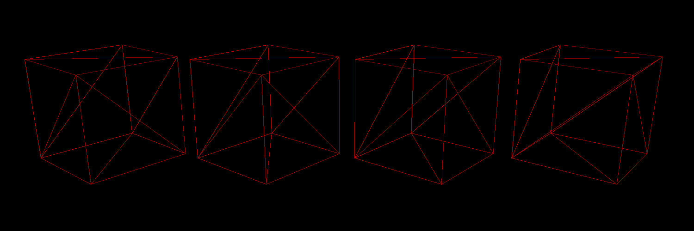
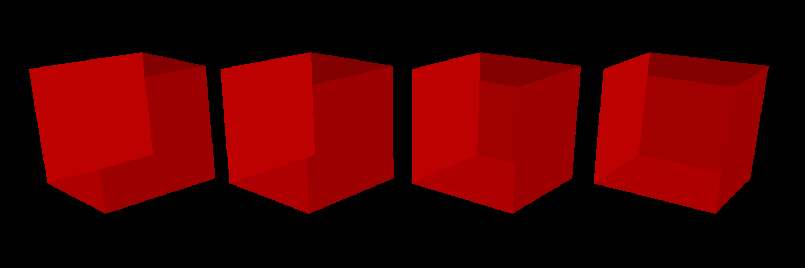
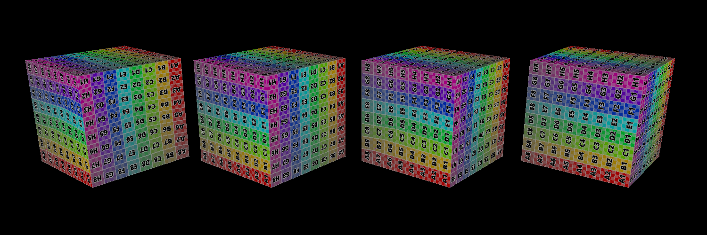
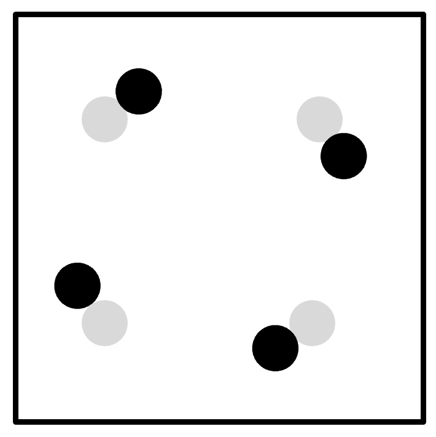
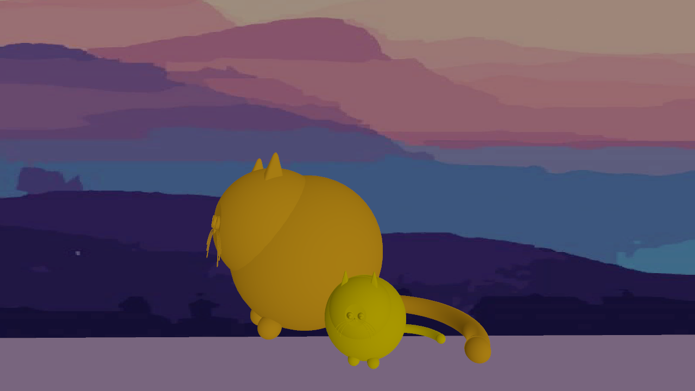

**Assignment 1 Report**
AndrewID: qiruh
(##) About this template
* You can view your writeup by opening it in a browser - right click this file and open with your browser of choice.
* Replace reference images with your own screenshots or renders when applicable.
* Include descriptions of any encountered problems and the time you spent on each task.
* **NOTE: The images you will submit here are different from the images in `A1.md`. Please make sure you are submitting the correct images.**
(##) A1T1 CHECKPOINT
You do not need any screenshots for this task.
Your completion will be graded based on the reference `test.a1.task1.cpp` file and
checking that transformations can be correctly applied in the GUI.
(##) A1T2 CHECKPOINT
Reference image:

Please replace the above image with your own screenshot of the rasterized wireframe cubes, but all in **RED**.
This can be done by doing the following:
* Open `media/js3d/A1-cubes.js3d` in the GUI,
* Set the DrawStyle of every cube to be 'Wireframe',
* Setting the material of one of the cubes to be a Constant type with a red color,
* Click on the Render tab, then open the Render Window, and use the default settings to rasterize the scene. You will need to switch from the `Path Tracer` option to `Software Rasterizer` option.
Your completion will be graded based on the on the above picture, the reference `test.a1.task2.cpp` file and
checking that rasterizing wireframe meshes will look decent.
(##) A1T3 CHECKPOINT
Reference image:

Please replace the above image with your own screenshot of the rasterized flat triangles cubes, but all in **RED**.
This can be done by doing the following:
* Open `media/js3d/A1-cubes.js3d` in the GUI,
* Set the DrawStyle of every cube to be 'Flat',
* Setting the material of one of the cubes to be a Constant type with a red color,
* Click on the Render tab, then open the Render Window, and use the default settings to rasterize the scene. You will need to switch from the `Path Tracer` option to `Software Rasterizer` option.
Your completion will be graded based on the above picture, the reference `test.a1.task3.cpp` file and
checking that rasterizing flat triangle meshes will look decent.
(##) A1T4 CHECKPOINT
You do not need any screenshots for this task. However, please answer the following questions about `media/js3d/A1T4-blend-depth.js3d1`:
* What combination of blend and depth styles would enable us to see three colors?
* Red: Blend: Blend Replace, Depth: Depth Always
* Green: Blend: Blend Replace, Depth: Depth Always
* Blue: Blend: Blend Replace, Depth: Depth Always
* What combination of blend and depth styles would enable us to see five colors?
* Red: Blend: Blend Replace, Depth: Depth Always
* Green: Blend: Blend Add, Depth: Depth Less
* Blue: Blend: Blend Add, Depth: Depth Less
Do note that there are multiple correct answers to the above two questions - as long as you provide a valid one, you will receive credit.
Your completion will be graded based on the on the above answers, the reference `test.a1.task4.cpp` file and
checking that rasterizing with different blend and depth modes will look decent.
(##) A1T5 FINAL
Reference image:

Please replace the above image with your own screenshot of the rasterized smooth and correct triangles cubes.
This can be done by doing the following:
* Open `media/js3d/A1-cubes.js3d` in the GUI,
* Set the DrawStyle of the wireframe cube to be 'smooth' and the DrawStyle of the flat cube to be 'correct',
* Click on the Render tab, then open the Render Window, and use the default settings to rasterize the scene. You will need to switch from the `Path Tracer` option to `Software Rasterizer` option.
Your completion will be graded based on the above picture, the reference `test.a1.task5.cpp` file and
checking that rasterizing flat triangle meshes will look decent.
(##) A1T6 FINAL
You do not need any screenshots for this task.
Your completion will be graded based on the reference `test.a1.task6.cpp` file and
checking that rasterizing the samplers scene will look decent.
(##) A1T7 FINAL
Insert a picture of your sample pattern here (up to you on how you created it):

Explanation of what your SamplePattern does and scenarios it would do well and poorly in:
This is a rotated 2x2 grid sample pattern. Comparing to grid sample pattern, each sample in the
grid is rotated by an angle so that the samples no longer align with the horizontal or vertical
axis. This performs better for axis-aligned alias, for example vertical or horizontal lines.
However, it performs poorly if the alias align with the rotation angle.
Your completion will be graded based on the above answer, the reference `test.a1.task7.cpp` file and
checking that rasterizing the samplers scene will look decent.
(##) RASTERIZED IMAGE FINAL
Your image:

Explanation of what it is and how you made it:
This is a scene of two cats, a floor and a wall. The scene is stored in cat.js3d.
Any free model sources you need to credit?
I downloaded the cat's 3D model from Free3D.
(link: https://free3d.com/3d-model/cute-fat-cat-obj-997368.html)
(##) EXTRA CREDIT FINAL
Use this section to explain any extra credit implementations you have made.
(##) Feedback
There are some weird bugs in my current implementation.
My line rasterzation worked at A1.0 checkpoint.
However, after implementing T5 to T7, some edges of a Depth Less wireframe cube
went missing. A Depth Always wireframe cube looks correct though.
A TA looked over my code and could not find the bug.